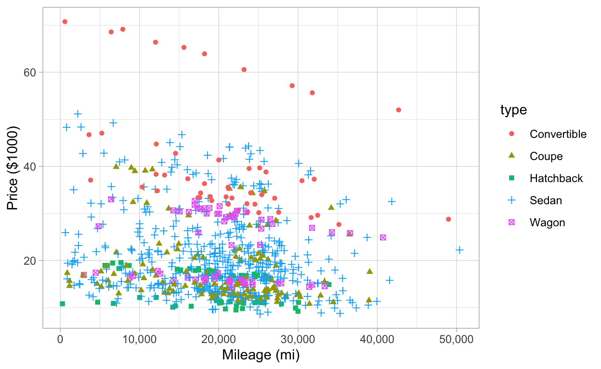
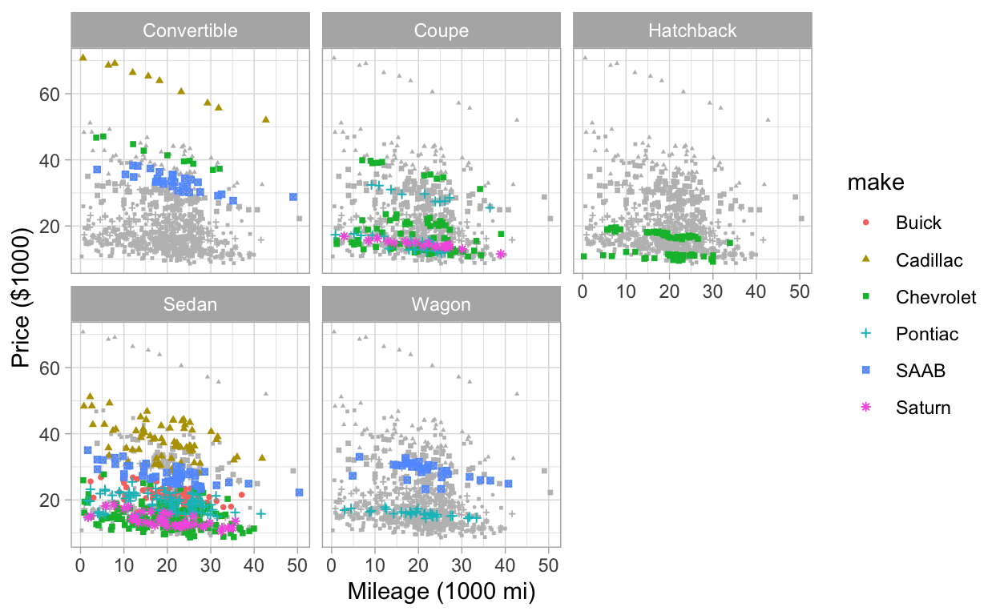
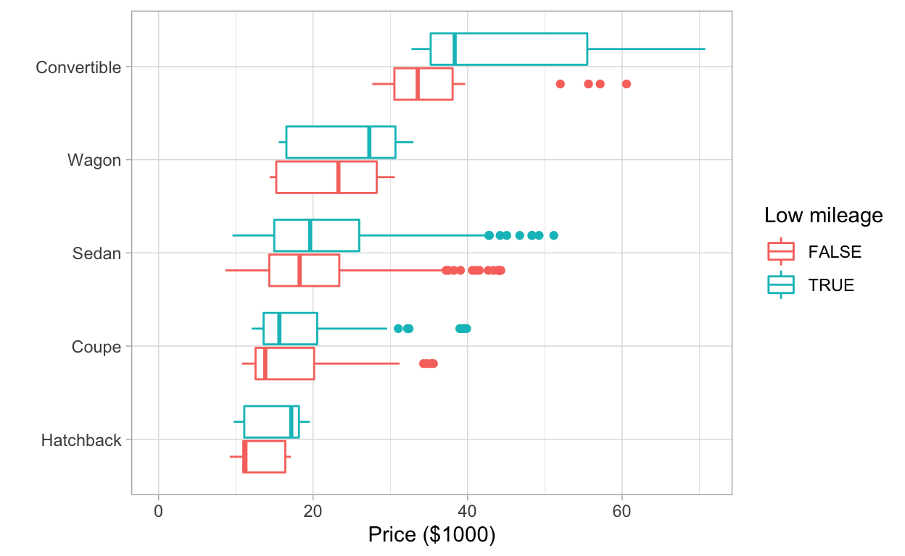
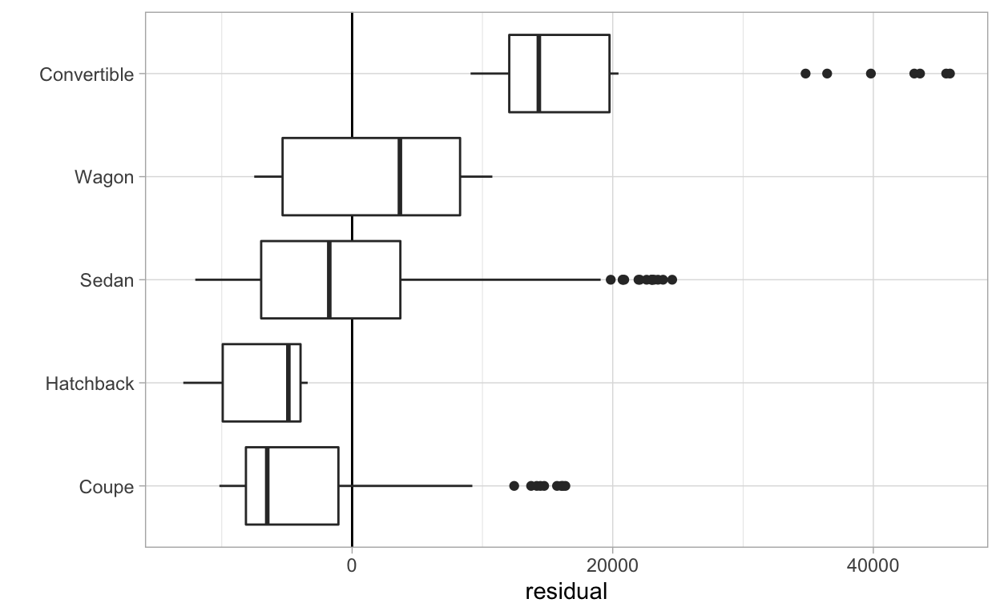

This quiz uses a dataset from Kuiper 2017 of car sale prices from Kelly Blue Book for several hundred 2005 used General Motors (GM) cars. The link to the data set can be found at the bottom of the article, if you’re interested in running this analysis on your own computer.
Let’s take a quick look at the data:
car_prices %>% head()car_prices %>% glimpse()## Rows: 804
## Columns: 12
## $ price <dbl> 17314.10, 17542.04, 16218.85, 16336.91, 16339.17, 15709.05, …
## $ mileage <dbl> 8221, 9135, 13196, 16342, 19832, 22236, 22576, 22964, 24021,…
## $ make <chr> "Buick", "Buick", "Buick", "Buick", "Buick", "Buick", "Buick…
## $ model <chr> "Century", "Century", "Century", "Century", "Century", "Cent…
## $ trim <chr> "Sedan 4D", "Sedan 4D", "Sedan 4D", "Sedan 4D", "Sedan 4D", …
## $ type <chr> "Sedan", "Sedan", "Sedan", "Sedan", "Sedan", "Sedan", "Sedan…
## $ cylinder <dbl> 6, 6, 6, 6, 6, 6, 6, 6, 6, 6, 6, 6, 6, 6, 6, 6, 6, 6, 6, 6, …
## $ liter <dbl> 3.1, 3.1, 3.1, 3.1, 3.1, 3.1, 3.1, 3.1, 3.1, 3.1, 3.6, 3.6, …
## $ doors <dbl> 4, 4, 4, 4, 4, 4, 4, 4, 4, 4, 4, 4, 4, 4, 4, 4, 4, 4, 4, 4, …
## $ cruise <dbl> 1, 1, 1, 1, 1, 1, 1, 1, 1, 1, 1, 1, 1, 1, 1, 1, 1, 1, 1, 1, …
## $ sound <dbl> 1, 1, 1, 0, 0, 1, 1, 1, 0, 1, 0, 1, 1, 1, 1, 1, 0, 1, 1, 1, …
## $ leather <dbl> 1, 0, 0, 0, 1, 0, 0, 0, 1, 1, 0, 0, 0, 1, 1, 0, 0, 1, 0, 1, …Write code to reproduce the following visualization, intended to show that lower-mileage cars tend to be valued more highly.
Tips:

car_prices %>% ___Extra credit: can you figure out how to make this plot? Email me your answer. Tip: two geom_point layers, one with data set to car_prices without the make column.

Write code to reproduce the following visualization, intended to show whether mileage affects price differently for different types of cars. Consider a car to be “low mileage” if its mileage is less than the median mileage.

What was the most common car make in this data set?
Make a table showing, for each car type, what fraction of the listed cars had cruise control. Note that the cruise column contains a 1 if the listed car has cruise control, 0 if it doesn’t. Your table should have 5 rows. Sort the table from highest to lowest fraction.
Which car type least frequently had cruise control?
Do 2-door cars or 4-door (doors) cars have bigger engines (liter column) on average in this data set?
For increasingly many consumers, fuel economy is a deciding factor in purchasing decisions. However, the Kelly Blue Book data set doesn’t include any fuel economy data. Fortunately the US Department of Energy and the EPA put together https://www.fueleconomy.org. That site provides both consumer-facing tools to compare the monetary and environmental fuel costs of various vehicles. Fortunately they also release machine-readable data files. According to the Kuiper 2017 article, all of the vehicles were 2005 model year and less than a year old, so the 2005 data has been downloaded for you:
fuel_eco <- read_csv("data/guide2005-2004oct15.csv") %>% janitor::clean_names()Notable columns are (descriptions are quoted from the EPA’s guide):
manufacturer and carline_name: the make and model of the car tested.cty: City represents urban driving, in which a vehicle is started in the morning (after being parked all night) and driven in stop-and-go rush hour traffichwy: Highway represents a mixture of rural and interstate highway driving in warmed-up vehicles, typical of longer trips in free-flowing traffic.cmb: Combined city and highway MPG estimates … assume you will drive 55% in the city and 45% on the highway.Full documentation from the source is available here.
We first briefly verify that the carline name is sufficiently unique to describe a car; there are no cars with the same name but different manufacturers:
fuel_eco %>% distinct(carline_name) %>% nrow()## [1] 540fuel_eco %>% distinct(manufacturer, carline_name) %>% nrow()## [1] 540Good to go. But a brief look at the dataset immediately reveals two potential problems:
fuel_eco %>% select(manufacturer, carline_name, cty, hwy, cmb) %>% head(5)First problem: each car may be reported several times in the EPA dataset, once for each different engine option or transmission type. We could work out some of that data from the trim column
Let’s look at car_prices again for reference:
car_prices %>% distinct(make, model) %>% head(5)Second problem: the EPA uses all-caps for car names but the Kelly Blue Book didn’t. So none of the EPA’s carline_names in fuel_eco will match the models in car_prices. But we won’t let that stop us! Here’s a strategy: ignore case. Specifically, let’s upper-case (str_to_upper()) the models in car_prices and put the result in a new column. Then we can use that new column to match up the cars between the two data frames.
type of car (convertible, coupe, …) has the highest median highway MPG?Let’s try to make some models to predict price.
We’ll hold out a testing set so we can validate our model.
set.seed(0)
cars_split <- initial_split(car_prices, prop = 3/4, strata = "make")
cars_train <- training(cars_split)
cars_test <- testing(cars_split)First, create a tidymodels model called model that predicts price from mileage using linear regression on the training set. (You do not need a recipe here.)
Then, write code to recreate the following plot, which shows how the residuals (actual minus predicted) depend on the car type. Plots like this can be useful for showing whether it’s helpful to add additional features to the predictive model.
(Note: because of the limitations of this platform, you’ll need to do both the model fitting and the graph creation in the same cell.)
